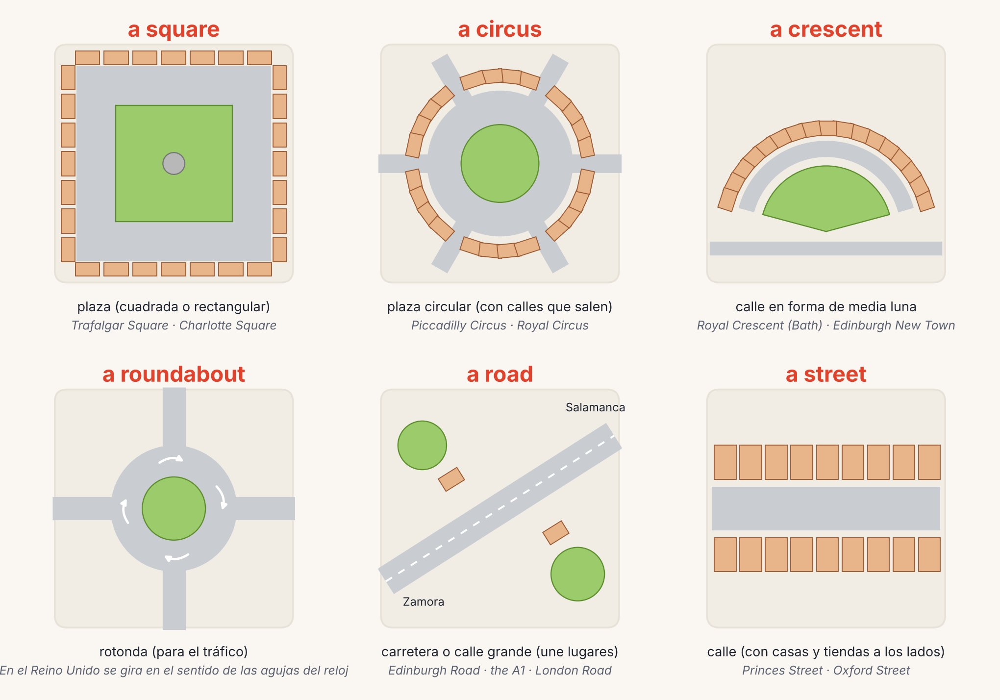

city, town, village; river, lake, mountains; square, circus, crescent, road, street. Primero, el artículo con todo lo visto, explicado y ordenado; después, lo que vimos en cada sesión.
Exploramos Edimburgo con Google Earth desde el aire y vimos cómo se llaman las calles y los espacios públicos según su forma. Lo relacionamos con lugares de Londres como Piccadilly Circus y Trafalgar Square.

Palabra
Qué es
Ejemplos
square
una plaza cuadrada o rectangular, muchas veces con jardín en el centro
Trafalgar Square (Londres) · Charlotte Square, St Andrew Square (Edimburgo)
circus
una plaza redonda donde se juntan varias calles (del latín circus, círculo)
Piccadilly Circus, Oxford Circus (Londres) · Royal Circus (Edimburgo)
crescent /ˈkresənt/
una calle curva en forma de media luna (crescent moon)
Royal Crescent (Bath) · Randolph Crescent, Atholl Crescent (Edimburgo)
roundabout
una rotonda para el tráfico
En el Reino Unido se gira en el sentido de las agujas del reloj.
road
carretera o calle grande que une lugares
London Road, the A1 (de Londres a Edimburgo)
street
calle de ciudad con casas y tiendas a los lados
Princes Street (Edimburgo) · Oxford Street (Londres)
En las direcciones se abrevian: St (Street), Rd (Road), Sq (Square), Cres (Crescent).
Curiosidad: croissant significa «media luna» en francés, igual que crescent.